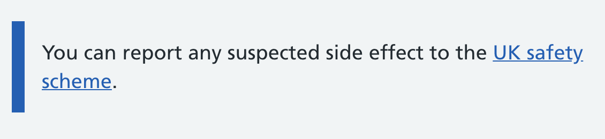
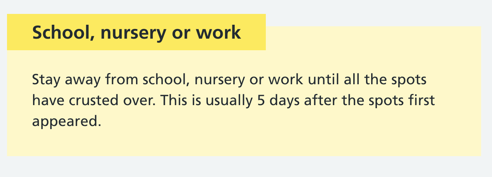

It’s very useful if your organisation has a design system with well-tested components. At NHS Digital we have the NHS UK frontend components.
But having components and guidance on when to use them isn’t enough. You need to understand how your components you’re using work together, not just how they work in isolation.
For example, the inset text component. You should use the inset text component to help users identify important content on the page.
Here’s the inset text component:
The inset text component is really useful for making content stand out amongst other content. Particularly if a user is scrolling through lots of content.
The warning callout is similar but helps users understand warning content on the page, even if they don't read the whole page.
Here’s the warning callout component:
The warning callout should be used for information that:
- is time critical
- could have a significant effect on someone's health
- addresses a common or significant misconception or mistake
But imagine you use a warning callout close to some inset text. How will users know what content is important?
Although the inset text and warning callout components have different purposes, on the whole they still indicate to a user that this content is important.
Using too many of these components close together could:
- make your components less effective
- confuse your users
Make sure you’re aware of how your components work together, not just how they work in isolation.
Copyright Samantha Saw | @samantharosesaw